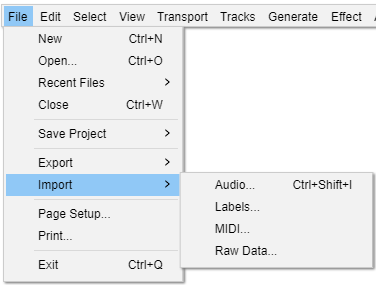
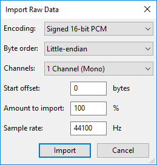

File Menu: Import
- Click, or hover, on any menu item in the image to read about that command. Skip the image
- 
Audio... Ctrl +Shift + I
Launches a file selection window where you can choose to import one or more audio files into the current Audacity project. The file(s) will always be added as a new track to the project. This lets you mix two or more files together.
See Importing Audio for more information.
Labels...
Launches a file selection window where you can choose to import a single text file into the project containing point or region labels. For more information about the syntax for labels files, see Importing and Exporting Labels.
MIDI...
Imports a MIDI (MIDI or MID extension) or Allegro (GRO) file to a Note Track where the Note track can be played.
This should just work on Windows but for playback on Mac and Linux additional software may be required, see this section on the Playing and Recording page.
Simple cut-and-paste edits can also be performed. The result can be exported with the command.
Raw Data...
- 
Attempts to import an uncompressed audio file that might be "raw" data without any headers to define its format, might have incorrect headers or be otherwise partially corrupted, or might be in a format that Audacity is unable to recognize. Raw data in textual format cannot be imported.
First, select the file in question in the "Select any uncompressed audio file" dialog. Then select appropriate parameters to assist Audacity in the formatting of the data. The fields in the dialog require you select:
- Encoding (PCM, ADPCM, float...)
- Byte order (this is almost always Little-endian if the file was created on Windows)
- Number of channels (expected to be found in the file and created as a result)
- Start offset in bytes
- Percentage amount of the file to import
- Sample rate to be applied to the import (currently, only rates between 100 Hz and 100000 Hz are supported)